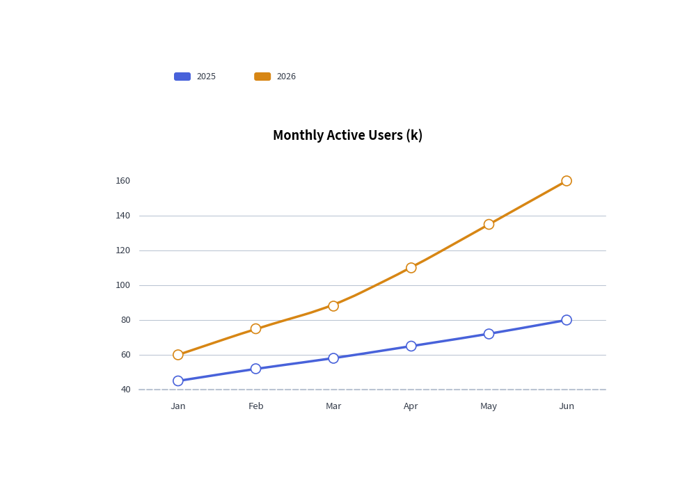

Line Chart
The LineChart component visualizes numerical trends over ordered categories or continuous time points.
It supports straight line segments, smoothed spline curves, custom point marker shapes, configurable line styles, and decoupled legend rendering.
1. Quick Example: User Growth Trends

2. Key Features
- Smooth Spline Interpolation (
smooth=True): Renders organic, flowing curves through data points rather than sharp zigzag angles. - Data Point Markers (
show_points=True):point_shape: Marker symbol ("circle","square","none").point_size: Radius / dimensions of markers.
- Stroke Styles (
line_style): Supports"solid","dashed", and"dotted"strokes to differentiate targets from actuals. - Decoupled Legend (
draw_legend): Allows rendering the series legend at any coordinate on the canvas.
3. Class API Reference
Constructor
LineChart(
axis_line_style: Style,
categories: list[str] | None = None,
axis_text_style: Style | None = None,
grid_style: Style | None = None,
value_text_style: Style | None = None,
background_style: Style | None = None,
title: str = "",
title_style: Style | None = None,
width: float = 80.0,
height: float = 50.0,
smooth: bool = False,
show_points: bool = True,
point_shape: Literal["circle", "square", "none"] = "circle",
point_size: float = 0.7,
)
Adding Series & Rendering
chart.add_series(
name: str,
values: list[float],
style: Style,
line_width: float = 2.0,
line_style: LineStyle = "solid",
point_shape: PointShape | None = None,
point_size: float | None = None,
legend_text_style: Style | None = None,
)
chart.draw(xy=(0.0, 0.0))
chart.draw_legend(xy, text_style=Styles.Black, orientation="vertical")